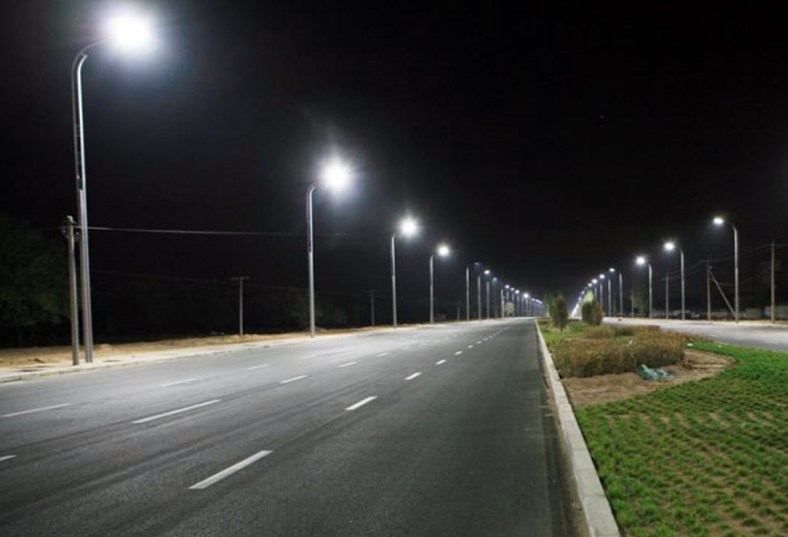

Талдықорған: орталық көшелерде жарықтандыру жаңартылуда

Қаладағы негізгі көшелер мен тұрғын аудандарда сыртқы жарықтандыру жүйесін жаңарту жұмыстары жүйелі түрде жалғасуда.
Аталған шаралар қаланың түнгі келбетін жақсартуға, сондай-ақ тұрғындар мен жүргізушілер үшін қауіпсіз орта қалыптастыруға бағытталған.
Жобаның басты мақсаты — кешкі және түнгі уақытта көрінуді арттырып, жол-көлік оқиғаларының алдын алу.
Жаңарту барысында ескірген жарық шамдары заманауи LED шамдарға ауыстырылып, олардың жарық беру сапасы мен энергия тиімділігі ескерілуде.
Сонымен қатар, жарық бағаналарының техникалық жағдайы тексеріліп, қажет болған жағдайда электр желілері мен қосалқы жабдықтар жөндеуден өтуде.
Жұмыстар кезең-кезеңімен жүргізіледі: алдымен жарық шамдарын ауыстыру, одан кейін электр желілерін тексеру және бүкіл жүйені ретке келтіру.
Мамандардың айтуынша, жаңартылған жарықтандыру жүйесі түнгі уақытта көше қозғалысын айқын етіп, жаяу жүргіншілер үшін қолайлы жағдай жасайды.
Қала әкімдігі алдағы уақытта жарықтандыруды тек орталық көшелерде ғана емес, тұрғын аудандар мен қоғамдық орындарда да жаңартуды жоспарлап отыр.
Аталған жұмыстар Талдықорған қаласының инфрақұрылымын жаңғыртуға және тұрғындардың өмір сапасын арттыруға бағытталған.